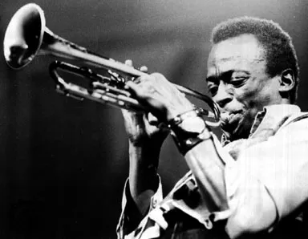

Cool Jazz
쿨 재즈는 미 서부 백인 뮤지션을 중심으로 발전하며 웨스트 코스트 재즈라고도 불린다. 초기 스윙 재즈가 춤을
위한 음악이었다면 1940년대 비밥은 연주자의 중심으로 즉흥연주의 큰 발전을 이뤄냈다. 하지만 예술성은 강해질수록 대중들이
비밥을 듣기에는 점점 어려워지고 그로 인해 재즈의 단순한 음악적 감상 역시 쉽지 않았다. 빠른 템포의 격렬하고 강한 비밥에
반해 좀 더 차분하고 정적인 분위기, 그리고 음 하나하나를 들으며 경청할 수 있는 음악이 유행하기 시작했는데, 이를 쿨 재즈라 말한다.
비밥과 쿨 재즈의 곡 형식은 크게 다르지 않다. 하지만 연주 방법에 있어서 많은 차이를 보인다. 먼저 쿨 재즈는 템포가 비밥에 비해
느리며 16분 음표의 빠르고 난해한 비밥 스케일을 쓰는 대신 쿨 재즈는 8분음표의 아주 정제된 코드 톤 위주 사운드가 매력적이다. 그래서
쿨 재즈는 비밥에 비해 더욱 서사적이고 감상용 음악으로 발전할 수 있는 즉흥연주가 가능하였다. 물론 뮤지션의 연주 스타일에 따라
연주법이 다르지만 그렇기 때문에 쿨 재즈는 개인의 연주 기량보다는 밴드 사운드의 조화를 중시했다.
대표적인 뮤지션들로 마일즈 데이비스, 데이브 브루벡, 스탄 게츠, 쳇 베이커 등이 있다.
Blue In Green - Miles Davis
Take Five - Dave Brubeck
Whisper Not - Stan Getz
